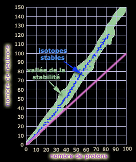

|
Du latin transmutatio, de
trans- et mutare, changer
Le verbe correspondant est transmuer,
de préférence à transmuter
Le légendaire objectif ultime des
alchimistes (la transmutation, « l'Oeuvre », quasiment la pierre philosophale) fut atteint par Irène et
Frédéric Joliot-Curie dans la première moitié des années 1930 (Nobel 1935
pour la "radioactivité artificielle", c'est-à-dire non seulement la
transmutation artificielle, mais aussi, plus spécifiquement on le verra, la
formation d'un isotope inconnu d'un élément).
La transmutation est de toute façon un phénomène "naturel" et d'ailleurs les
Joliot-Curie n'appréciaient pas le terme "radioactivité artificielle",
arguant (pour faire court) qu'il n'y a qu'une seule radioactivité. De fait,
les termes "naturel" et "artificiel" semblent surtout correspondre ici à des
conceptions "communes", "normales" essentiellement liées à
la présence ou
l'inexistence de ces phénomènes sur notre toute petite planète.
La transmutation est le phénomène
par lequel un élément devient un autre élément. Le
nombre de protons définissant chaque élément (lire
passage avec exemple in
Les dialogues de Dotapea, chap. IV), la transmutation ne consiste en
rien d'autre que modifier ce nombre.
L'uranium 238 (demi-vie : environ 4,5 milliard d'années soit
peu ou prou l'âge de la
terre) se transforme "naturellement" en plomb 206 après quatorze
transmutations s'étalant sur des périodes très longues. C'est une
"chaîne de désintégrations" (parmi d'autres, la plupart aboutissant au
plomb ou l'un de ses voisins, quoi que cette
affirmation doive être modulée, voir encadré), chaîne où interviennent aussi des changements
isotopiques. Les agents de la transmutation sont :
* le rayonnement alpha, découvert par
Irène Joliot-Curie en 1925 (thèse). Il s'agit de l'émission d'un noyau
d'hélium (deux protons et deux neutrons) capable d'arracher un "proton de
recul" à un autre atome. Un tel "rayonnement" est peu pénétrant et peut
être stoppé par une feuille de papier. Il est cependant assez puissant
pour avoir fait parler de lui dans la presse généraliste du monde entier
en 2006, lors de l'affaire
Litvinenko, un cas rarissime d'empoisonnement mortel au polonium 210.
* le rayonnement bêta-. Un neutron se
change en proton en éjectant un électron.
* le rayonnement bêta+. Un proton se
change en neutron en éjectant un positron. Dans la nature, le positron (électron positif,
antimatière de l'électron) ne tarde pas à rencontrer son alter ego
négatif (largement majoritaire), ce qui provoque leur annihilation
réciproque, soit leur transformation en
énergie sous la forme d'un rayonnement gamma, hors de propos
ici car ce rayonnement n'est pas assez puissant pour provoquer des
modifications nucléiques.
|
Une précision concernant les durées et les "fins
de chaînes" On parle ici de durées qui peuvent être absolument
phénoménales. Pas des milliards d'années mais plutôt des milliards de
fois l'âge de l'univers (environ 15 milliards d'années).
Le diagramme ci-dessous donne une représentation graphique de ce
qu'est la stabilité d'un élément : elle est
fonction directe de son nombre de protons d'une part et de son nombre de
neutrons d'autre part.

Son orientation ne suit pas la proportion "un pour un"
(cf. ligne mauve). La "vallée de la stabilité" et les isotopes stables
sont identifiés en fonction des émissions (voir ci-contre).
Le fer (5626Fe, soit 30 neutrons
pour 26 protons) est le plus stable en termes d'énergie de liaison
nucléique.
Donc le plomb, certes, est stable déjà à une échelle
qui n'est pas humaine ni même en rapport avec l'âge de l'univers, mais
en principe le fer le "surpasse" (si l'expression a un sens dans ce
contexte). Le plomb 206 et ses voisins sont stables, même si ce ne sont
pas "les plus stables possibles".
Voir
informations complémentaires (site gouvernemental australien en
anglais) |
C'est pourtant ce manque de puissance du rayonnement gamma (pris dans le
cas général) qui expliquerait que les Joliot-Curie aient "manqué le neutron"
découvert par James Chadwick. Plus exactement, les Joliot-Curie auraient cru à
tort qu'un rayonnement gamma pourrait "libérer (...) des protons animés
d'une grande vitesse", là où c'est le rayonnement alpha, découvert
pourtant par Irène, qui possède suffisamment d'énergie pour arracher, un peu
comme aux jeux de billard ou de pétanque, des protons au noyau.
Cependant, ce sont bien les Joliot-Curie
qui réalisèrent l'un des plus fantastiques rêves de l'humanité : la première
transmutation "de main humaine", rêve des alchimistes. Ils ont soumis une simple feuille
d'aluminium à un rayonnement alpha et obtinrent ainsi du
phosphore, ou plus précisément un isotope du
phosphore qui n'avait jamais été observé auparavant (d'où sans doute
l'appellation contestée de "radioactivité artificielle" évoquée au début de
cet article). Ils purent isoler l'élément produit avant qu'il se transforme
en silicium, son voisin dans la table de Mendeleïev.
Coïncidence amusante : le phosphore aurait précisément été
identifié par des alchimistes.
Cette découverte aurait eu lieu au XIIème siècle en Orient et/ou
au XVIIème en Occident.
On avait donc trouvé le moyen de transmuer
un élément par "décrémentation" du numéro atomique (par perte ou
transformation de protons).
Plus tard on découvrit qu'il était possible d'effectuer l'opération inverse,
l'augmentation du nombre de protons.
Ce phénomène, la nucléosynthèse, se produit également naturellement, notamment au coeur des
étoiles par fusion de noyaux.
La fusion est l'objet de recherches intenses (par exemple le projet ITER -
lien externe) car elle
produit de grandes quantités d'énergie.
Parmi les éléments que l'on a pu synthétiser dans la foulée de la
découverte des Joliot-Curie en croyant créer quelque chose de totalement
nouveau, le plutonium (un élément dit transuranien, à
savoir dont
le numéro atomique est supérieur à 92, soit celui de
l'uranium) s'avéra en fait exister sur terre à l'état
naturel (affaire de la mine d'Oklo, au Gabon). Il peut sembler douteux de toute manière d'accorder aujourd'hui
pertinence à une distinction entre des éléments qui seraient intrinsèquement
naturels ou bien artificiels simplement parce que les uns sont présents en
quantités plus importantes dans
l'environnement terrien actuel que les autres. La banalité ne serait-elle
pas la plus triste définition du naturel ?
On notera la persistance de ce point de vue
dualiste dans des exposés actuels. Ainsi peut-on lire aujourd'hui sur un
site dont le nom commence par W qu'il existerait une chaîne de
désintégration "artificielle", celle du plutonium 241. Explication avancée :
"La durée de vie de cette série est insuffisante pour que l'on en trouve
des traces minéralogiques." Point de vue pour ainsi dire ptoléméien où
ce qui est naturel est censé être ce que nous pouvons voir sur notre
planète. La chaîne de 241Pu est tout aussi naturelle ou
artificielle que les autres. Elle dure moins longtemps, cela ne va pas plus
loin.
Pour information on citera les quatre chaînes en soulignant que
ce ne sont pas les seules voies de transmutation car il existe des fissions
"naturelles" (ou non) qui initient d'autres chaînes et tout n'est pas réglé
par le seul rayonnement alpha, c'est-à-dire qu'à chaque transmutation,
l'atome ne perd pas quatre nucléons (ce qui implique que le raisonnement par
modulos a ses limites). Voici les "parents théoriques" de ces chaînes de
désintégrations :
* 238U
* 239U
* 240Pu
* 241Pu
Très théoriques en effet car il existe des éléments plus
lourds. Par exemple 294118 (ununoctium) se transmue en 290116,
etc.
On notera pour finir ce passage que la transmutation demeure un enjeu capital d'actualité
dans différents domaines dont celui du traitement des déchets radioactifs.
D'un point de vue artistique
plus proche de l'objet central de ce site, la transmutation ne semble
guère "plastiquement utilisable" techniquement de nos jours mais elle peut apporter un
regard réaliste sur le monde et... sur l'oeuvre, l'oeuvre que beaucoup
d'artistes veulent pérenne (au sens fort du mot, au-delà du durable). Il
s'en dégage une certaine ironie, du moins un curieux paradoxe qui mérite
d'être mentionné : une oeuvre faite de plomb a la
possibilité théorique d'être quasi éternelle (voir
ci-dessus et l'encadré où il est aussi question
du fer) et pourtant ce métal est réputé peu noble, pour ne pas dire à
deux sous, il a peu de tenue (il est très ductile),
il fond à basse température et c'est un poison pour l'homme.
Retour
début de page
|
|

 Communication
Communication


|